Threat Analysis & Risk Assessment
A graph-based TARA tool for OT, embedded and cyber-physical systems — turning data-flow diagrams into traceable threats, scored risks, and verifiable controls.
Built for engineers and security consultants who need defensible, standards-aligned assessments without spreadsheet sprawl.
// Standards & regulatory alignment
IEC 62443
ISO/SAE 21434
EU Cyber Resilience Act
EN 50742
STRIDE
CIANAAA
OWASP Risk Rating